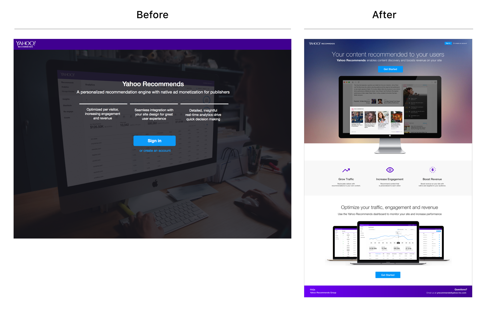

The goal of Yahoo Recommends was to allow users to monetize their website using Yahoo gemini technology. There were two parts to this; an ad component that users embed onto their website that recommend related content [their own website content] in addition to related gemini ads to their users so that they stay engaged longer. The second part was an analytics website tool in which users can log in to their account and view ad data and metrics on their dashboard to see how their ad component is performing and what they can do to improve click through rates. Users will also be using this tool to create new ad components to embed into their website as well as maintaining their existing ad components that are currently live. These ad components can be customized and designed to their own liking to fit their website look and feel to look integrated.
Our team had conducted machine learning to test to see if certain font sizes, colors, or the number of ads perform better than others. This data allowed us to help suggest to our users how they can improve their numbers.
My role was the lead product designer for the Yahoo Recommends tool. I was also one of the lead CSS developers that helped customized and stylized these ad components for our users. I had worked closely with product managers to define features that our users needed in order to optimize their profits. Our users ranged from individual blog users to large companies who were interested in monetizing their website and so making sure that our product was scalable for those use cases was incredibly important.
Problem: Splash page was not clear enough that users were not sure what service we were providing. Solution: I had added illustrations to show what sort of technology we would be offering to the user and some bullet points as to how we would help with user engagement. Comparision of before and after
